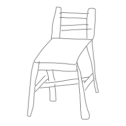
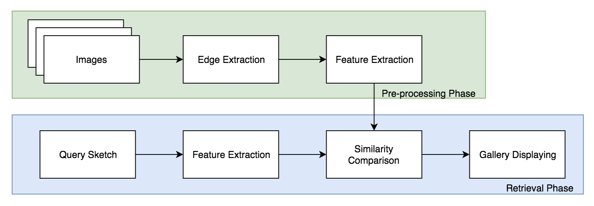

Sketch-Based Image Retrieval
Ramya Sree Boppana (903456349), Ang Deng (902989694), and Sanjana Garg (903475801)Fall 2019: CS 6476 Computer Vision: Class Project
Georgia Tech
Proposal
Abstract
Sketch based image retrieval systems have many applications in daily life like Medical diagnosis, digital library, search engines, crime prevention, photo sharing sites, geographical information, and sensing remote systems. The traditional text-based image retrieval systems are limited as with growing database of images it is difficult and unrealistic to annotate all the images for text-based search.In order to tackle this problem, we build a pipeline combining preprocessing the images (gray scaling edge extraction) and extracting various feature descriptors (SIFT, HOG, and Hu Moments) from the images. Then, we take the extracted features from a input sketch and fetch the most similar k images from the database based on distance metrics corresponding to each type of feature descriptors.
Based on the test dataset which contains images from two different categories split in 50/50 way, we were able to achieve above baseline (50%) accuracy from all three descriptors that we implemented. Our next step will be to try to tweak the parameters of these feature extractors and to try out strategies to combine the features in order to improve the overall performance.
Teaser Figure
Sample output from our application:

Introduction
The traditional text-based image retrieval systems are limited as with growing database of images it is difficult and unrealistic to annotate all the images for text-based search. Using sketch to retrieve images also alleviates the need for generating accurate captions for existing images, which becomes a complex natural language processing problem as the description is required to be more specific and detailed. Sketches have a much greater potential to describe the content and exact details of the image than plain text and are a more direct way of expressing human thoughts than text abstraction.Sketch based image retrieval systems have many applications in daily life like Medical diagnosis, digital library, search engines, crime prevention, photo sharing sites, geographical information, and sensing remote systems. With the increasing use of touch screen devices, Sketch-Based Image Retrieval (SBIR) has relevant applications in e-commerce platforms also.
Currently we are with regular RBG photographs, but the skeches are only black and white. We are not designming any new way to solve this problem, but building from scratch using knowledge we obtained from class lectures and reseaches.
Approach
In our approach, we aim to tackle the following aspects of sketch-image differences:- Visual Cue Imbalance: The sketches have a holistic shape and salient local shapes while the images are abundant in details on shape, texture, and color.
- Abstraction Gap: The sketches are usually simplified version (missing details) of images with random distortion (the randomness in strokes) and unrealistic disproportion (object parts being unrealistically smaller or bigger).

The whole SBIR framework can be divided into two phases- pre-processing
and retrieval. The framework is shown in the above figure.
Pre-Processing Phase
In this phase, we pre-process the dataset to extract features. For every image in the dataset, we perform the following steps.- Edge extraction Convert the image to its gray intensity representation.
- Feature extraction In this step, we encode the edge feature maps to representations that are efficient for similarity comparison.
Extract local edge features using the Canny edge detector. Edge extraction addresses the visual cue imbalance. Since the sketches are generally composed of strokes which are mostly edges, it is intuitive to compare edge maps of images with sketches. We use a high threshold to extract only the salient edges and thus address the simplification sub-aspect of the abstraction gap.
We extract histogram-based local features like SIFT, Histogram of Oriented Gradients (HOG) and global features like shape. The histogram features can tolerate random distortions in the sketches due to the grid division scheme in feature extraction.
Retrieval Phase
This is the phase in which the query image is processed to retrieve similar images.- Feature extraction Similar to the feature extraction step of the pre-processing phase, we extract a histogram of features from the input sketch image. Since sketches are close to the edge map of images, we do not have the step of edge extraction in this phase.
- Similarity comparison To compare the histogram-based features of the input sketch and the dataset images, we plan to use one or more of the metrics to calculate the similarity between histograms like city block, cosine, Chi-square, Euclidean distance, and histogram intersection distances.
The top 'k' similar images from the above step are retrieved as output.
Experiments and Results
Experimental Setup
This dataset is organized into two categories of photos and sketches - shoe and chair and has a total of 1,432 sketch-photo pairs. Images and sketches are of the scale and orientation.
https://www.eecs.qmul.ac.uk/~qian/Project_cvpr16.html
We first start with the two category dataset Shoe for our problem, to test our features.
200 images of shoes and 200 images of chairs.
For the input sketch, the best k matches from the total of 400 candidate images.
Evaluation metrics
We will be evaluating the performance of our system (different descriptors and different parameters) using the below metrics.- Precision and Recall at k: For a given query sketch image, precision at k images (P@k) is (e.g., P@10 or "Precision at 10") corresponds to the number of relevant images among the top k images retrieved.
- Average Precision at k per category: We evaluate the peformance of our system for each category of images in the dataset using this metric. This is calculated as follows for a category. Consider each sketch image in the category as query and calculate P@k for that query image. Calculate mean of the P@k scores for each query.
Experiments
Using the above setup (datasets and evaluation metrics) following are some of the experiments we plan to perform.- Experiment with different image features for different categories of objects and evaluate which features perform better for a category.
- For Hu Moments, based on the Shoes Dataset, the performance for both categories average to be about the same (between 0.6 to 0.7 accuracy).
- Experiment with different datasets - Shoe and The Sketchy and evaluate how the system performs for different scales and orientations of sketches.
Qualitative results
Show several visual examples of inputs/outputs of your system (success cases and failures) that help us better understand your approach.Conclusion and future work
Conclusion would likely make the same points as the abstract. Discuss any future ideas you have to make your approach better.References/Citations
[1] Li, Y. & Li, W. Machine Vision and Applications (2018) 29: 1083. https://doi.org/10.1007/s00138-018-0953-8[2] M. Eitz, K. Hildebrand, T. Boubekeur and M. Alexa, "Sketch-Based Image Retrieval: Benchmark and Bag-of-Features Descriptors," in IEEE Transactions on Visualization and Computer Graphics, vol. 17, no. 11, pp. 1624-1636, Nov. 2011.
[3] Xiao, Changcheng & Wang, Changhu & Zhang, Liqing & Zhang, Lei. (2015). Sketch-based Image Retrieval via Shape Words. 571-574. 10.1145/2671188.2749360.
[4] C. Xiao, C. Wang, L. Zhang, and L. Zhang, “IdeaPanel,” in Proceedings of the 5th ACM on International Conference on Multimedia Retrieval-ICMR '15, pp. 667-668 (2015).